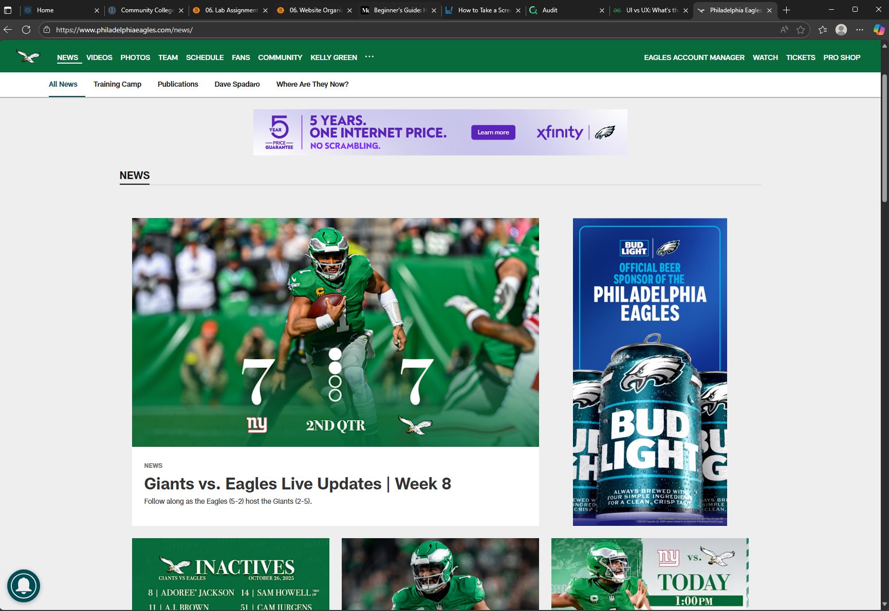

What is the URL of the website?
What is the name of the website?
The name of the website is Philadelphia Eagles.
Who is the site's target audience?
The target audience of the website are fans, players, and the overall community of the NFL sport team, The Philadelphia Eagles.
How is the site organized?
The website itself has a hierachical organization.
Which CRAP Design Principle does the use? Provide at least one example.
The website definetly hits the Contrast part of the CRAP Design priciple. The webpages does a good job with this with how different the fonts aree on each page within it. It also keeps the pages desighn with the teams colors in mind and never deviates from that. I like how for the text the headlines are bold and big and the information pertaining to that headline is a different size.
What is the Audit Score according to the Accessibility Checker
The webisite got an Audit Score of 71 percent.
What is the site's effectiveness? Does it support users in completing actions accurately?
I would say yes its effecvtive at what it does but this is only medium in its effectiveness. The page can get confusing when looking for specific and is nopt thte best with user feedback when clicking around. Overall it does help the user complete their actions at the end of the day although you might get lost when navigating the page.
What is the site's efficiency? Can users can perform tasks quickly?
I would say the website is very efficient as it does take a tiny bit of clicks to get where you want to be. It can be very responsive in this regard. Tasks like looking at the schedule or shopping for merch can be dont very quickly.
How is the engagement? Is it pleasant to use and appropriate for its industry/topic?
I found the website page very enganging. Theres news all about the season and stories to watch of your favorite players. Theres even a live tracker for ongoing games so you can read and know the score as you browse the page.
Make at least one recommendation to improve this website based on what you learned in this module.
One thing I would change is navigational icon link back to homepage. Currently it's the eagle in the top left of the Page. Guess how long it took me to that out. Too long. This can be concerning especially for someone with a disability as it lacks that acessbility. It was a little bit of annoyance trying to find a way back to the home page after i finished browsing.